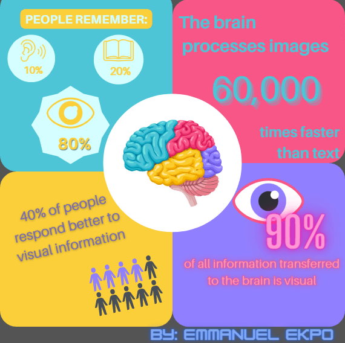
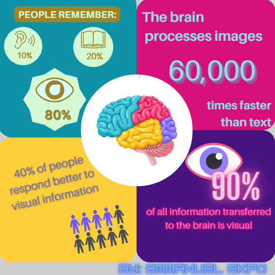

Sean Hall and Nathan Butler, writers of 3LW’s song “Playa’s gon’ play” are suing Taylor Swift and co-writers for the similarities in the song lyrics for her hit song “shake it off”. They claim that “shake it off” lyrics were similar to 3LW’s, playa’s gon play. The similarities lie in the lyrics “playa's they gonna play” and “haters they gonna hate” which were repeated in Taylor's song. While they insisted that they “originated the linguistic combination of [players playing and haters hating]”, the court dismissed the argument (Harvey, n.d). They also pointed out that the lyrics of their song were "completely original and unique" when it was written(Davis, 2022).
On the other hand, Taylor denies ever hearing the song or listening to 3LW prior to the lawsuit and argues that the similarities are just short phrases that can’t be protected by the Copyright Act(Harvey, n.d). She and her defendants also pointed out other records that the words “hater” and “player” have been used and can’t be deemed as creative(Harvey, n.d) In addition, Swift also stated that they did not invent the phrases either(Curto, 2022).
Citations:
Curto, J. (2022, September 13). Taylor Swift Can’t Shake Off Copyright Lawsuit, Must Go to Court. Vulture. https://www.vulture.com/2022/09/taylor-swift-shake-it-off-lawsuit-trial-2023.html
Harvey, S. H. (n.d.). JD Supra: Hall v. Swift: Nothing Original About a Player Hater. JD Supra. https://www.jdsupra.com/post/contentViewerEmbed.aspx?fid=c4773e11-086e-459d-8361-ff4b3ee18233
Davis, W. (2022, August 10). Taylor Swift says she never listened to 3LW before writing “Shake It Off.” NPR.org. https://www.npr.org/2022/08/10/1116723620/taylor-swift-lawsuit-shake-it-off-3lw
I do not think it should be. Although at the time of writing the song “playas gon’ play” the
phrases “players gonna play” and “haters gonna hate” were unique (Davis, 2022), however, it has
become very popular and common since then and has even been used in different
songs even at the time of the release of “shake it off”. The phrases are very common
and I don’t think 3LW have Copyrights over them as they don’t show any real form of
originality. It's almost like trying to copyright “I love you” or “I hate you”, which is already
widely used. Taylor also talked about how she had never heard of the song prior
to the lawsuit due to her upbringing (McNeal, 2021) so how would she have copied what
she never heard of in the first place?
3LW also used the lyrics “Shot callers, they gonna call” which is structured the
same way as “Players, they gonna play” and “Ballers, they gonna ball” which shows
that the lyrics aren’t particularly creative. The lyrics could have also included “fighters,
they gonna fight” and the like. In shake it off, Taylor also repeats the words hate and
play in her chorus. This wasn’t done by 3LW in their song which is a clear difference
between the 2 lyrics.
Citations:
McNeal, B. (2021, December 13). Taylor Swift’s “Shake It Off” Copyright Controversy, Explained. Nylon. https://www.nylon.com/entertainment/taylor-swift-shake-it-off-3lw-copyright-lawsuit-explained
Davis, W. (2022, August 10). Taylor Swift says she never listened to 3LW before writing “Shake It Off.” NPR.org. https://www.npr.org/2022/08/10/1116723620/taylor-swift-lawsuit-shake-it-off-3lw
I feel it would negatively affect the industry as a whole. The lawsuit against Taylor Swift
for example wasn’t a very valid one. If more lawsuits like this were filed against artists,
it would definitely increase their awareness and caution when making and releasing
music. Artists, songwriters and even producers will have to take their time when
preparing new music before it is released and check its lyrics and instrumentals
thoroughly against any copyright violation. This may prolong the time for songs to be
released which will reduce the overall industrial output. Essentially, less music will be
Released or more time will be taken to release music in order to avoid a lawsuit or
anything of that nature.
Also, a lot of time and emotions are invested into making
songs. If after all the investments, it is a copyright infringement, people won’t want to put
much effort into the creative process because it may go to waste. This reduces
the quality of the music being released. People may also be scared of joining such an
industry to avoid a waste of time and effort as well as the money they could lose if they
lose a lawsuit.
Before Accesability changes |
After Accesability changes |
|  |  |
| Text/Image Description |
Before Background |
Before Foreground |
Before Ratio |
After Background |
After Foreground |
After Ratio |
| PEOPLE REMEBER: |
#FACF3A |
#D4FEFF |
1.38 |
#A08222 |
#D2F9D2 |
3.19 |
| Shapes with ear, book and eye |
#D4FEFF |
#FACF3A |
1.38 |
#D2F9D2 |
#A08222 |
3.19 |
| 40% of people respond better to visual information |
#FACF3A |
#746AB8 |
3.12 |
#FACF3A |
#746AB8 |
3.12 |
| TOP ROW OF 10 MEN |
#FACF3A |
#907FFF |
2.11 |
#FACF3A |
#6D57FF |
3.15 |
| ...of all information transfered to the brain is visual |
#907FFF |
#F75686 |
1.01 |
#461381 |
#F4108A |
3.17 |
| 90% |
#907FFF |
#FF0099 |
1.17 |
#461381 |
#F980C1 |
5.32 |
| The brain processes images 60,000 times faster than text |
#F75686 |
#4DC5D6 |
1.55 |
#D70F79 |
#95DAEA |
3.19 |


I chose a web video as my message's medium. I chose this format because it usually is longer than an Instagram post or a youtube ad and it allows me to present the message in a complete manner meaning, I don’t have to exclude some details in order to shorten the video’s runtime.
The video focuses on Trent itself and unlike the previous assignment that focused more on numbers and words, it focuses on images and videos which are easier to understand and for the brain to process. I display videos of Trent's different facilities as well as the exterior of some of its buildings showing just how good the school is and invites the viewer to enrol in the school at the end of the video.
Click here to watch the video!
Image sources:
https://oneclass.com/blog/trent-university/96012-10-buildings-you-need-to-know-at-trent-university.en.html
https://www.trentu.ca/housing/peterborough-residences/undergraduate-residences/otonabee-college
https://www.uniquevenues.ca/Trent-University
https://www.trentu.ca/colleges/ladyeaton/live/dining
https://www.trentu.ca/conferences/welcome/food-beverage
https://www.trentu.ca/housing/peterborough-residences/undergraduate-residences/otonabee-college
https://www.trentu.ca/housing/applying/new-undergraduate-students/summer-residence-application
https://hidi.com/portfolio-item/trent-university-bata-library/